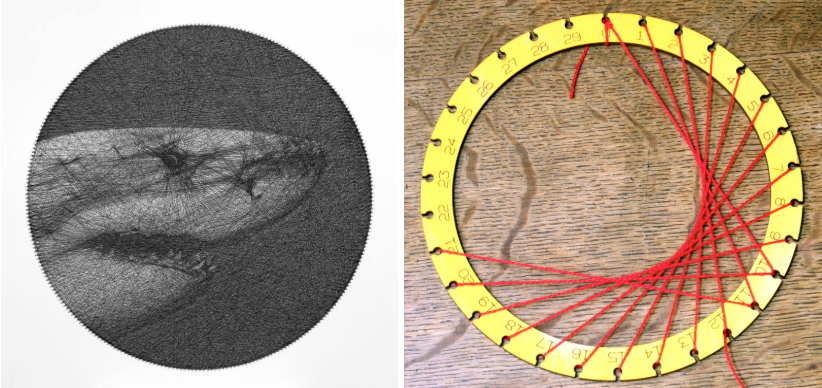
The pictures above were created by tying strings to pins aligned in a circle. This seemed like an interesting problem to me as it closely relates to another project I did a while back involving simulating CT scans (I may write about this later). But my idea was that the way the string moves across the canvas to another pin is analogous to the way an x-ray moves through a body in a CT scanner.
Any image can be divided into pixels with varying brightnesses. When putting this in the context of strings going into an image, the brightness is how much of the pixel is occupied by a string.
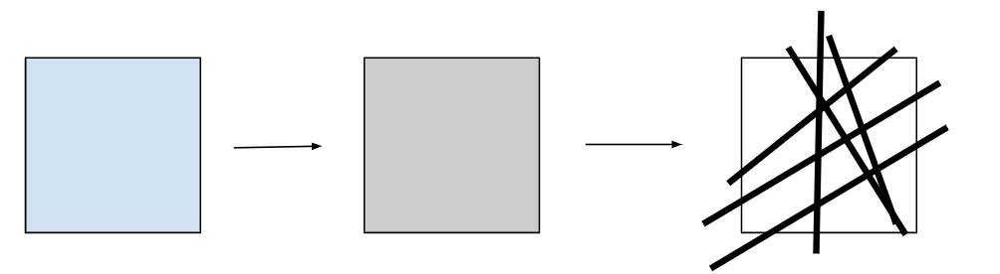
If a pixel is 50% gray, then it should be 50% covered by strings.
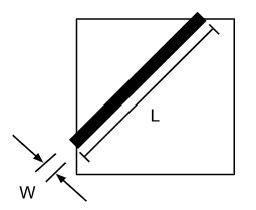
The area taken up by a string will be equal to the length of the segment crossing through the pixel times the width.
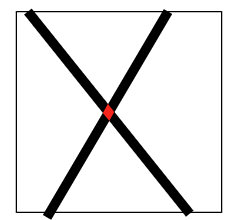
Adding these areas up won’t get an exact amount covered by the string since we’re double counting intersection points, but with a small string, these intersections make up a negligible amount of area, so we’ll ignore these to make life simpler.
This is where my previous knowledge of CT scans comes in. Just like how the computations in a CT scanner trace out the path of an x-ray, we can trace out the path of a string to see which pixels the string passes through, and how long each segment of that string is. The paper below shows the Siddon method. The method used to “Calculate the Exact Radiological Path through a Pixel or Voxel Space”, but in this case, of course, is used to calculate the path of a string. In the algorithm outlined in this link known as the Siddon method. You can trace the path of a line and measure the length of it through each segment in a grid.
I won’t get into details, but the idea is that you create a parametric equation that represents the line being followed as x(t) and y(t).
You then find some change in time Δt such that the change in x after Δt is the width of a pixel. You do the same thing with y(t), and by incrementing t by Δt until you reach the ends of the paths you’re tracing for x(t) and y(t). Doing this starting from an edge of a pixel will give you a list of points where the string intercepts with the boundaries of the pixels.
1.
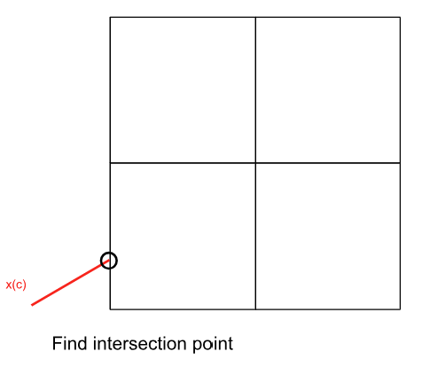
2.
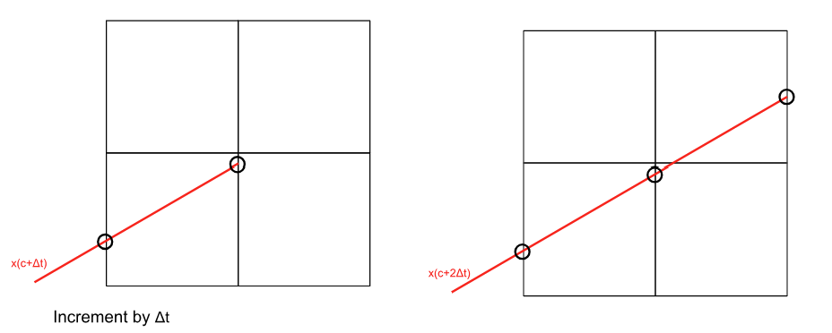
3.
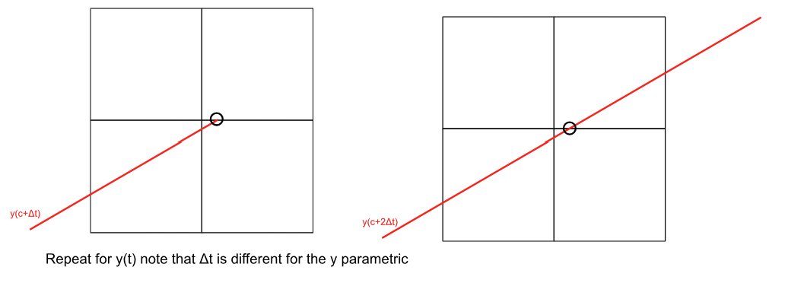
4.
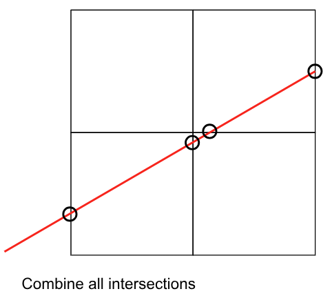
You can see this in action in this Desmos graph I made.
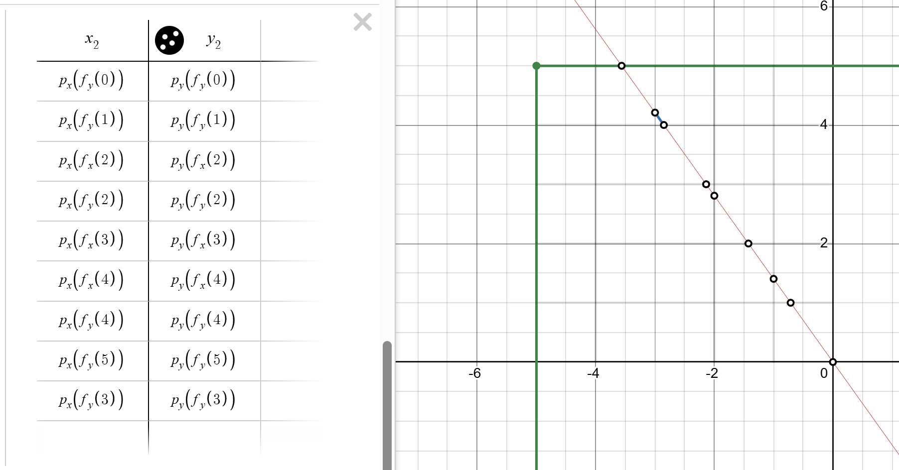
Let’s put everything we talked about into variables. The brightness values of each pixel can be expressed as a series of variables. Let’s call these variables $p1,p2, p3, p4...$ like so.
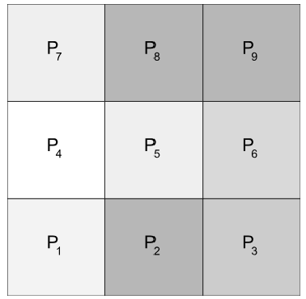
If we number the lines we use to create the picture like so, then we can create a series of linear equations that we can solve
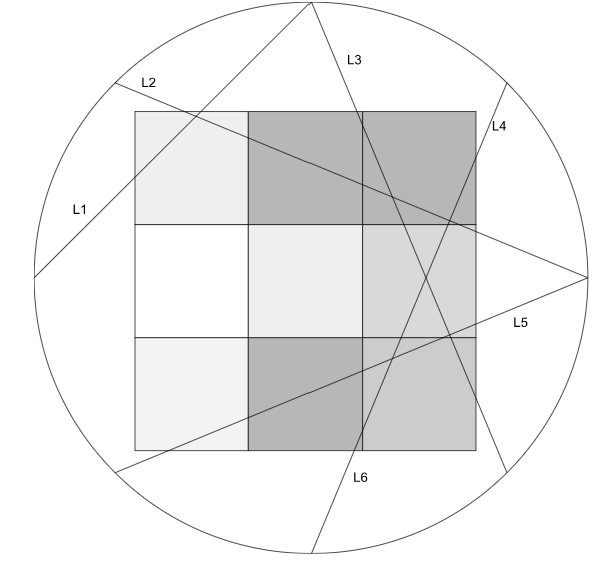
Let $A_{x y}$ be the area covered by string x through pixel y and Ln a variable to represent whether or not the line is used to construct the final image.
The values for the pixels can be written as a sum of the areas of the line segments as follows:
$P_1 = A_{1 1}L_1 + A_{2 1}L_2 + A_{3 1}L_3 + ... + A_{n 1}L_n$
$P_2 = A_{1 2}L_1 + A_{2 2}L_2 + A_{3 2}L_3 + ... + A_{n 2}L_n$
$P_3 = A_{1 3}L_1 + A_{2 3}L_2 + A_{3 3}L_3 + ... + A_{n 3}L_n$
$…$
$P_m = A_{1 m}L_1 + A_{2 m}L_2 + A{3 m}L_3 + ... + A_{n m}L_n$
Now if we figure out which $L_n=1$ and which $L_n=0$ gives the closest solution to all these equations, we can figure out which points to connect the strings to to construct an image. Linear algebra is really good for solving equations like this, so we put these variables into matrices and solve the equation: [A][L]=[P]. If you know linear algebra, it’s the same as solving Ax = b.
Using this algorithm, we can find the closest solution to that equation.
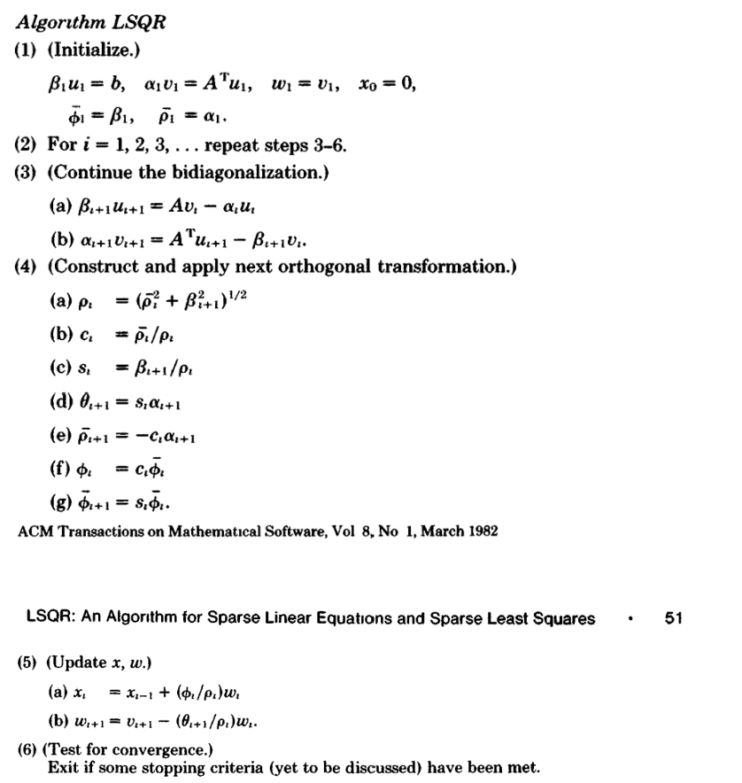
Paige, C. C., & Saunders, M. A. (1982). LSQR: Sparse Linear Equations and Least Squares Problems. ACM Transactions on Mathematical Software, 8(2), 209.
Since the values for the L vector consists of 1s and 0s, you’ll have to round each element in the vector produced by the LSQR algorithm. Once everything is done though, you’re able to produce a nice image with just straight lines around a circle. After some settings, I got the picture below in Matlab.
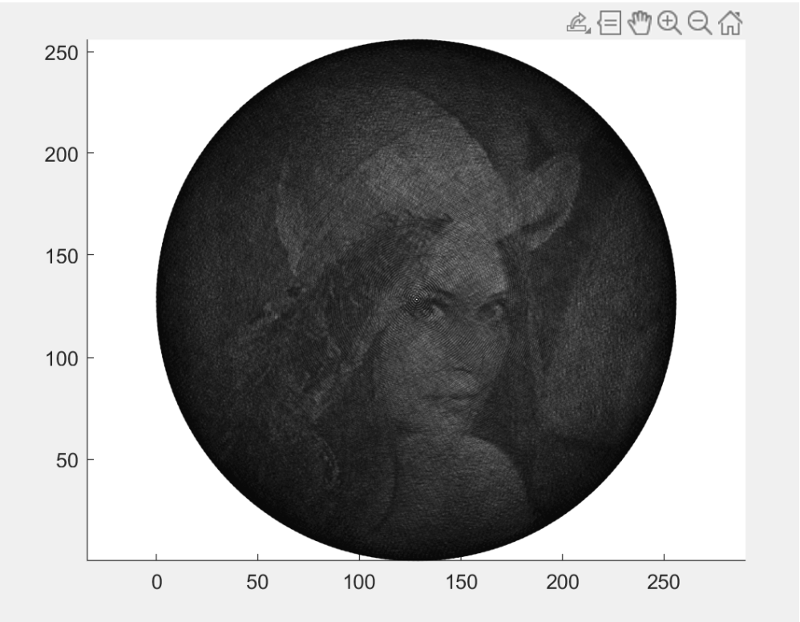
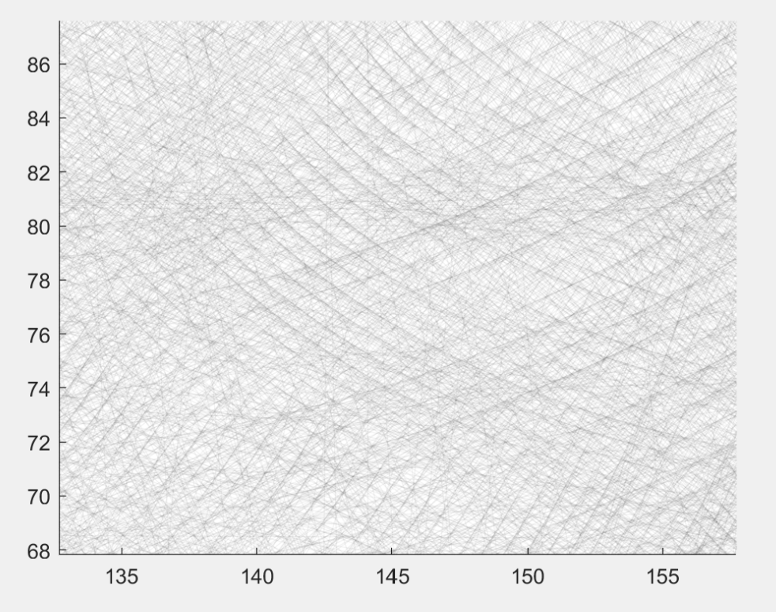